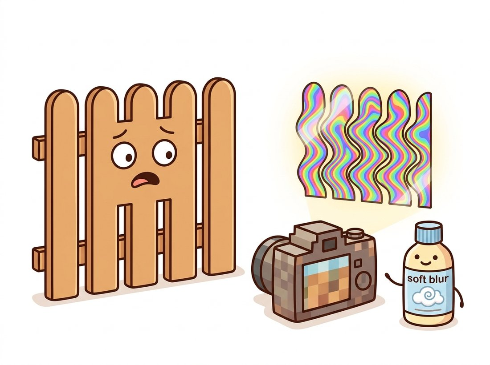

"They photographed me at two pixels per plank and now the internet thinks I'm a rainbow. I am a fence. I have always been a fence."
An Undersampled Picket Fence
A signal can be sampled and perfectly reconstructed only if it is sampled at more than twice its highest frequency; violate that bound and the excess frequencies do not vanish but reappear disguised as lower ones, permanently corrupting the data. That single sentence, the Nyquist-Shannon sampling theorem, governs every camera sensor, every call to resize, every strided convolution in a CNN, and every video frame rate. This section derives it with one picture, shows the damage with one test image, and gives the universal fix: remove what you cannot represent before you sample, never after.
Section 4.3 sculpted spectra deliberately. This section is about the spectral surgery you perform by accident every time you shrink an image. Resizing feels like an innocent operation, yet it is the most common way real pipelines corrupt their data, and the corruption has a special property that makes it dangerous: it is invisible in code review, intermittent in testing (it depends on image content), and irreversible once it happens. The frequency view from this chapter makes the mechanism, and therefore the cure, completely transparent.
1. Sampling Through the Frequency Lens Intermediate
Mathematically, sampling a continuous signal means multiplying it by a train of impulses spaced $1/f_s$ apart, where $f_s$ is the sampling rate. The frequency-domain consequence is the key to everything: multiplication by an impulse train in space equals convolution with an impulse train in frequency, so the sampled signal's spectrum is the original spectrum copied over and over, with replicas centered at every multiple of $f_s$:
$$F_s(u) \;=\; f_s \sum_{k=-\infty}^{\infty} F(u - k f_s)$$
Reconstruction means isolating the central copy with a low-pass filter. That works precisely when the copies do not touch, and the copies do not touch precisely when the original spectrum ends before the next replica begins: $f_s > 2 f_{\max}$, the Nyquist criterion. Made concrete: a pixel grid samples once per pixel, so its sampling rate is 1 cycle per pixel, and the finest pattern it can hold is therefore 0.5 cycles per pixel (one full light-dark cycle every two pixels). Anything finer than that half-cycle limit will alias. Figure 4.4.1 tells the whole story in two rows. When the criterion fails, neighboring replicas overlap, their tails add irreversibly, and a frequency $f$ above the limit masquerades as the lower frequency $|f - k f_s|$ folded back into range. That impostor is an alias.
A single arithmetic line makes the masquerade concrete. Sample at $f_s = 1$ cycle per pixel (one sample per pixel, so the Nyquist limit is $0.5$). A genuine pattern at $f = 0.4$ cycles per pixel sits safely under the limit and is recorded faithfully. But a finer pattern at $f = 0.7$ cycles per pixel exceeds the limit, so it folds: $|0.7 - 1| = 0.3$ cycles per pixel. The sensor cannot tell that $0.7$ apart from a true $0.3$ pattern; both produce identical samples, and the recorded image shows a coarse $0.3$ stripe where the scene had a fine $0.7$ one. Push the input to $f = 0.9$ and it folds to $|0.9 - 1| = 0.1$: the finer the unrepresentable detail, the coarser and more conspicuous the lie it leaves behind, which is exactly why a tightly woven fabric photographed too small turns into broad swirling bands rather than just disappearing.
After aliasing, an impostor frequency is bit-for-bit indistinguishable from genuine content at that frequency: the fold has already happened and the spectrum's overlapped regions have summed. No deblurring, sharpening, or clever restoration in Chapter 7 can separate them. The only correct treatment is prevention: low-pass filter the signal before sampling so that nothing above the new Nyquist limit exists at the moment of sampling. Blur-then-decimate is not a quality trade-off; it is the difference between losing detail and fabricating false detail.
2. Seeing Aliasing: The Zone Plate Torture Test Beginner
The standard instrument for catching resamplers misbehaving is the zone plate: concentric rings whose frequency grows linearly with radius, sweeping from zero at the center to the Nyquist limit at the edge. Any aliasing shows up as ghostly secondary ring families blooming where no rings should be. The test costs five lines:
# Build a zone plate (rings whose frequency grows with radius) and shrink it
# three ways: bare decimation, OpenCV's INTER_AREA, and an explicit Gaussian
# prefilter. Only the prefiltered routes remove unrepresentable detail first.
import numpy as np
import cv2
N = 512
yy, xx = np.mgrid[0:N, 0:N].astype(np.float64)
r2 = (xx - N / 2) ** 2 + (yy - N / 2) ** 2
zone = np.cos(np.pi * r2 / N) # radial frequency grows linearly with radius
factor = 4
naive = zone[::factor, ::factor] # decimation, no prefilter: aliasing factory
area = cv2.resize(zone, (N // factor, N // factor),
interpolation=cv2.INTER_AREA) # box prefilter built in
sigma = 0.5 * factor # blur matched to the reduction factor
prefiltered = cv2.GaussianBlur(zone, (0, 0), sigmaX=sigma)[::factor, ::factor]
# naive: loud families of false rings swirl across the whole image.
# area and prefiltered: the true central rings, fading smoothly to flat
# gray where frequencies above the new Nyquist limit were removed.Display the three results and the lesson is unforgettable: the naive decimation does not merely lose the fine outer rings, it invents coarse rings that were never there. This is exactly the moiré you have seen photographing a window screen, a fine-knit sweater, or a distant roof of tiles, and it is also why the rotating wagon wheels of old westerns spin backward: film at 24 frames per second is temporal sampling, and a wheel spoke passing faster than 12 cycles per second folds back into apparent slow or reverse rotation. The illustration below tells the same cautionary tale: shrink a fine pattern without blurring first and the sampler invents coarse rainbows that were never there.

Helicopter rotors filmed at a shutter and frame rate that exactly divide the rotor's rotation appear perfectly frozen mid-air, one of the internet's favorite "broken reality" videos. The physical sensor in your own camera dodges the same fate with an optical anti-aliasing layer that slightly blurs the scene before the pixel grid samples it, as described in Chapter 1. Manufacturers literally install blur on purpose, because the alternative to a little softness is colorful lies.
3. Anti-Aliasing Done Right Intermediate
The universal recipe is prefilter, then sample: reduce the image's bandwidth to fit the new sampling rate, then decimate. The five-word version, worth taping above any resize call, is in the tip below. For a reduction by factor $s$, the new Nyquist limit is $1/s$ of the old one, so the prefilter must suppress everything above it; for the Gaussian prefilter of Chapter 3, $\sigma \approx 0.5 s$ is a serviceable rule of thumb (scikit-image's resize uses the close cousin $\sigma = (s - 1)/2$ when its anti-aliasing is enabled). What trips teams up is that common APIs distribute this responsibility unevenly. In OpenCV, INTER_AREA averages over the source footprint and is the correct flag for shrinking, while INTER_LINEAR and INTER_NEAREST sample only a tiny neighborhood and alias badly at large reductions (they are interpolators, designed for enlarging, where the considerations are different and which Chapter 5 treats in depth). In PyTorch, F.interpolate aliases by default and anti-aliasing is opt-in:
The whole section compresses to five words: blur before you shrink, never after. Blurring first removes the detail the smaller grid cannot hold; blurring afterward only smears the false patterns the bad shrink already baked in. The companion number is just as portable: when reducing by a factor $s$, a Gaussian prefilter with $\sigma \approx 0.5\,s$ is a safe default. If you can recall only one line from Chapter 4 at three in the morning while debugging a thumbnail pipeline, make it this one.
# Repeat the downsampling experiment inside PyTorch to show that antialiasing
# is opt-in: F.interpolate aliases by default, and antialias=True is the entire
# difference between fabricated ghost rings and a correctly bandlimited result.
import torch
import torch.nn.functional as F
t = torch.from_numpy(zone)[None, None] # (1, 1, 512, 512)
no_aa = F.interpolate(t, scale_factor=0.25, mode="bilinear")
aa = F.interpolate(t, scale_factor=0.25, mode="bilinear", antialias=True)
# no_aa reproduces the naive ghost rings on the GPU; aa widens the
# bilinear kernel to cover the full source footprint and matches the
# clean result of Code 4.4.1.A correct hand-rolled shrink (choose the prefilter, match its bandwidth to the factor, blur, decimate, handle borders and dtypes) is about 10 lines that must be re-tuned for every scale factor. The library form is one line:
from torchvision.transforms import v2
small = v2.Resize(128, antialias=True)(t) # antialias defaults to True in v2A 10-to-1 reduction, and more importantly a guarantee: torchvision's v2 transforms enable anti-aliasing by default (the v1 generation did not, a frequent source of train-versus-deploy quality gaps), automatically widen the resampling kernel in proportion to the scale factor, and behave consistently on tensors and PIL images. Pillow's own Image.resize has performed proper supersampled filtering since version 2.7, which is one reason datasets preprocessed with PIL and models served with raw F.interpolate can disagree.
Who: A platform engineer on the image-pipeline team of a large fashion e-commerce marketplace.
Situation: Sellers upload product photos at 3000 to 6000 pixels; the pipeline generates 240-pixel thumbnails for listing grids. A GPU rewrite of the pipeline had quietly replaced PIL resizing with a plain bilinear F.interpolate.
Problem: Support tickets began arriving with the subject "my photo is corrupted": fine-knit sweaters, tweed jackets, and pleated skirts rendered with garish swirling color bands in thumbnails while looking perfect at full size. An A/B dashboard showed measurably lower click-through on affected categories. Nothing was "broken" in the code, and most product photos (smooth fabrics, plain backgrounds) looked fine, so the bug had passed review and canary alike.
Decision: The team diagnosed moiré from unfiltered 12-to-25x downsampling, switched the resize to anti-aliased bicubic, and added a zone-plate image (Code 4.4.1) to the pipeline's CI suite with an assertion on ghost-ring energy after every resize backend change.
Result: The artifacts disappeared, click-through on textured categories recovered to baseline within two weeks, and six months later the CI zone plate caught an identical regression when a new "fast preview" path shipped with nearest-neighbor sampling.
Lesson: Resizing is sampling, and sampling is a signal-processing operation with a correctness criterion, not a cosmetic choice among interpolation flags. Encode the criterion in a test, because this bug class is content-dependent and will sneak past human review again.
4. Aliasing Inside Neural Networks Advanced
The sampling theorem does not stop applying when the pixels enter a network. Every stride-2 convolution and every pooling layer in the CNNs of Chapter 19 is a downsampling step, and most classic architectures perform it with no adequate prefilter. Max pooling is particularly lawless, since taking a maximum is not even linear, let alone bandlimited. The measurable symptom is broken shift invariance: shift the input image by a single pixel and a classifier's confidence can swing dramatically, because aliased feature maps fold the shift into spurious low-frequency changes.
Three landmark fixes all apply this chapter's recipe inside the network. Richard Zhang's BlurPool (ICML 2019) inserts a small fixed blur before each stride and improves both shift stability and plain accuracy across architectures. StyleGAN3 (NeurIPS 2021) pushed the discipline through an entire generator, treating every feature map as a continuous bandlimited signal with carefully matched filters at each resampling, which cured the eerie "texture sticking" of earlier GANs where hair and skin detail stayed glued to screen coordinates while faces moved. Alias-Free Convnets (CVPR 2023) extended the program to full fractional-shift equivariance in classifiers, taming the nonlinearities that reintroduce high frequencies.
Anti-aliasing has become an architectural design principle rather than a preprocessing detail. The torchvision v2 transforms (2023 onward) made anti-aliased resizing the framework default, closing a long-standing train-versus-serve mismatch. Alias-Free Convnets (CVPR 2023) showed certified shift-equivariant classification is achievable with polynomial activations and proper resampling. In generative video, the 2024-2025 wave of systems in the Sora lineage made temporal sampling artifacts a first-class evaluation concern: wagon-wheel rotation, flickering fine textures, and frame-rate-dependent motion are temporal aliasing by another name, and the same prefilter-before-sample reasoning, applied along the time axis, guides both their critique and their fixes. The through-line from a 1949 theorem to 2025 video models is unusually direct: any system that samples, in space or in time, owes Nyquist its due.
An image contains a fabric texture at 0.7 cycles per pixel... except it cannot, since 0.5 cycles per pixel is the maximum a pixel grid can hold. Suppose instead an optical pattern at 0.35 cycles per pixel is photographed, and the resulting image is then decimated by taking every second pixel. (a) What is the new Nyquist limit in cycles per original pixel? (b) At what apparent frequency does the 0.35-cycle pattern reappear in the decimated image? (c) Explain, citing Figure 4.4.1, why enlarging the decimated image back to full size cannot restore the truth.
Build a small audit script that shrinks the zone plate by factors 2, 4, and 8 through every backend you use in practice: cv2 (INTER_NEAREST, INTER_LINEAR, INTER_AREA, INTER_LANCZOS4), PIL's Image.resize, skimage.transform.resize with and without anti_aliasing, and torch F.interpolate with and without antialias. Quantify aliasing as the energy outside the central clean-ring region (define it from the best result) and produce a ranked table. Which combinations would you ban from a production shrink path? You could grow this harness into a small portfolio project: package it as a one-command "resize linter" that any image pipeline can drop into CI, asserting that a checked-in zone plate stays alias-free after every resize-backend change, exactly the guardrail the fashion-marketplace team in this section wished they had shipped before the rainbow sweaters did.
Implement two tiny feature extractors in PyTorch: conv, ReLU, stride-2 max pool, and the same with a 3x3 blur inserted before the stride (BlurPool style). Feed each a textured image and its copies shifted by 1 to 8 pixels, and plot the cosine similarity between the original and shifted feature maps (after aligning them back). Quantify how much the blur improves shift consistency, and explain the mechanism in one paragraph using the language of this section.